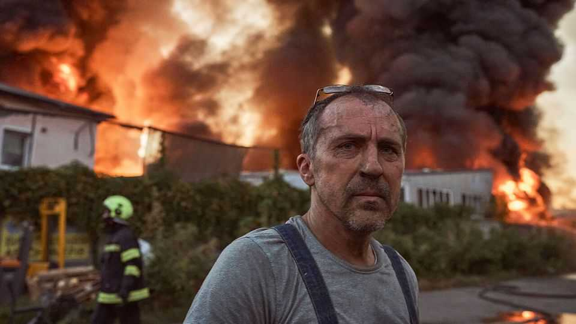

The selfish case for helping Ukraine has never been stronger
Rapidly changing technology, wielded by a lawless enemy, may be the future of war

Sep 17th 2026
HOW FAST fortunes can shift in war. Only a few months ago Russia seemed stuck. It was unable to advance on the front line despite suffering over 1,000 casualties a day, even as Ukrainian strikes deep within enemy territory were piling pressure on Vladimir Putin. In recent weeks, however, the dynamic has changed. Russia is exploiting new technology and extra production to hit Ukrainian cities with savage ferocity in a bid to make life there unbearable. Ukraine is not about to collapse—its front line remains strong—but European allies need to redouble their support. In this war they are glimpsing the future, and Ukraine is where their defence must begin.
As we set out in our reporting, Russia has sharply intensified its air war against Ukraine’s cities, border crossings and infrastructure far from the front. This is made possible by new technology, including a switch from propeller- to jet-powered Shahed drones which will need interceptor missiles to counter them. Using a “mesh” network of radio relays between drones, Russia can hunt moving targets such as railways, not just home in blindly on set co-ordinates. It is also building its own version of the American Starlink satellite system, which threatens to give it a big advantage in deep strikes in 2027.
Russia’s second strength is volume. Its production target for jet-Shaheds this year is said to be 24,000. By one estimate, it can launch over a hundred of its ballistic missiles each month. Given that Ukraine and its allies are critically short of air defences, including Patriot interceptors, that is a grave problem.
These new weapons will not suddenly bring about a Russian victory. The direct military benefit from blowing up shopping malls, petrol stations, trains and other civilian targets is marginal. But Mr Putin believes that, if he sows enough fear, saps public morale and thumps an already-slumping economy, he will break his victims’ resolve. It does not help that Ukrainian politics has soured amid gripes that the president, Volodymyr Zelensky, has centralised power and that corruption is rife. If Mr Putin is right, and people flee from Ukraine or money runs short, that will eventually weigh on the front line, too.
Ukraine, and its Western backers, must prove him wrong. Unfortunately, that will be hard—and probably impossible before the punishing winter adds to Ukrainians’ burden. Some measures are technically obvious, but politically hard. America’s government and Elon Musk should let Ukraine expand the use of Starlink over western Russia. That could help destroy Russia’s mobile missile-launchers. But few expect them to agree, owing to an exaggerated fear of escalation.
The priority is to get more European money to Ukraine faster. Promises this year from NATO countries to give Ukraine $60bn in bilateral military aid are unfulfilled. Ukraine’s generals talk of $27bn in budgetary shortfalls, even as they plan to launch 10m drones this year. The EU’s promise to supply €90bn ($103bn) is broadly on track, but more should be disbursed early.
The money is needed to prop up the economy. But it is also vital to speed up the pace of Ukraine’s military innovations and to help its burgeoning arms industry scale them up fast. With Western help, it may in time develop its own supply of cheap missiles and interceptors.
Europe has already done a lot to back Ukraine, partly by stepping in when President Donald Trump withdrew America’s financial support. To ask for more may seem unwise, especially when some populist-right parties are calling for funding to be curbed. However, the moral case for supporting Ukraine remains strong, and the selfish one has never been more compelling. Mr Putin believes Russia is at war with Europe. His armies are already well-practised in asymmetric drone warfare, and they are learning all the time. Europe, by contrast, is unprepared. It must learn from Ukraine by backing it. ■